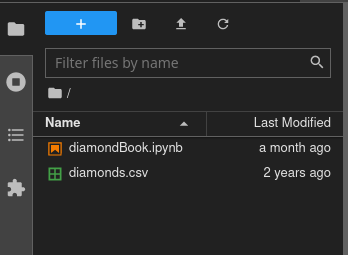

Scientists and engineers deal with data every day in their work. Whether it be test results from an experiment or data collected in the field, they are required to process data and present their analysis in a concise, clean format. This guide seeks to provide information on best practices for handling data in a lab or experiment all the way from data collection to the final report. To help demonstrate these techniques, some sample data will be provided and worked on at each step. If you would like to follow the code along in Jupyter Labs, here is a link to the Jupyter Lab file that I created. In addition, a PDF version can be viewed here.
This article will use Python, a programming language created by Guido van Rossum. To get the most out of the article, it is recommended to follow along using a live version of Python. Python is a freely available programming language that can be obtained on all operating systems. Below is a list of resources to create a working install of Python on your respective operating system:
For any installation, ensure that Python is added to PATH. PATH essentially maps a global command to your command prompt. Typically, if you were to access a program via the command line, you would need to drill down to the specific folder and run the file. With a PATH-mapped application, you are able to simply call it wherever you are in your file structure. It is necessary for applications like pip, the Python package manager, and Jupyter Labs, a convenient IDE (integrated development environment).
On the graphical installers for Windows and Mac OS X, there should be a check box at the end of the installation that looks like this:
After getting the PATH variable set up properly and Python installed, it is necessary for the following packages to be installed:
Using your command line, you can install these packages by entering the following command:
python3 -m pip install numpy matplotlib pandasIf you wish to also install Jupyter Labs, the command would look like this:
python3 -m pip install numpy matplotlib pandas jupyterlabpip is the default package manager for Python. Essentially, this tells pip to fetch those packages and install them to your Python install. Once this is done, if you elected to install the jupyterlab package, type the following command to open up a Jupyer Notebook:
jupyter labThis command will open a Jupyter Lab instance wherever the working directory of your command line is. If you’d like to work out of a specific folder, it is necessary to path there before running Jupyter Lab.
With the necessary packages together, it’s time to start the process of taking data from the experiment or field to the report!
One of the most important steps in an experiment is collecting data in a format that allows the experimenter to easily access and perform analysis on the data. In the days before computer tools for data processing, this took the form of pen and paper. While this style of data acquisition is simple and requires no technical knowledge whatsoever, it is unsuited for data sets of any appreciable size. There is a reason that writing sentences over and over in school was a punishment!
With the advent of computers, gone are the days of needing to prep tables of data on paper. A CSV file, or comma separated value file, is a comma-delimited text document that is extensible across numerous programs. Spreadsheet programs such as Microsoft Excel, Google Sheets, LibreOffice Calc, and Apple Numbers are able to operate on these files while also being able to be edited from a text editor like Notepad or Vim.
Let’s say that you’re an manufacturing engineer at a large diamond company, and you want to review diamond sales information your company has to obtain some insight into your product and perform cost analysis on the plant. To show how to process data, we’ll be using the ‘Diamonds’ dataset from Kaggle. This dataset contains approximately 50,000 separate diamond entries with info including their price, carat, cut quality, and physical dimensions. To get a copy of the data, create an account with Kaggle and download the CSV from the link.
Create a folder somewhere on your hard disk that contains the previously mentioned CSV. You may also choose to place the iPython Notebook in there as well. Open a terminal (command prompt) and navigate to the folder that contains the CSV file and the notebook. Once you have done so, run jupyter lab to start a Jupyter Lab session. On the left, there should be a tabular view of the files in your current directory.

Open the file with the .ipynb extension. You should now be greeted by code on the right. From left to right on the following figure, the basic controls for manipulating the notebook are as follows:

As a rule of thumb, it is typically sufficient to run single cells at a time unless significant changes have occurred across cells. This is why using a Jupyter Lab session can be helpful in the process of creating code.
To start with, we’ll look at the first cell
#Import necessary packages
import matplotlib.pyplot as plt
import numpy as np
import pandas as pdThe function of this cell is to call in necessary packages for the analysis. It aliases matplotlib.pyplot as plt,numpyasnp, and pandas as pd. This is helpful, as in order to call these libraries, their name has to be written each time, eliminating any unnecessary keystrokes.
The second cell reads as follows:
#Reading in diamond data
diamonds = pd.read_csv("diamonds.csv")
uniqueCuts = diamonds["cut"].unique()
print(uniqueCuts)This cell tells the computer to read the diamond data (labeled as diamonds.csv on my computer) and assign it to the variable diamonds. It is important that the file is in the same directory as where the Jupyter Lab instance was started; otherwise, simply inputting the name of the file as seen in the code block will not work.
After pulling the CSV file from the hard disk, the unique types of cuts are assigned as uniqueCuts. Say instead we wanted the unique carat values, we can replace uniqueCuts = diamonds["cut"].unique() with uniqueCarat = diamonds["carat"].unique().
Finally, after those values are written to a variable, they are then printed. When printing the output, we receive the following result:
['Ideal' 'Premium' 'Good' 'Very Good' 'Fair]This will be helpful later on. If we wish to characterize our data by the cut quality, we’ll know which unique factors are available.
Now that we’ve got the raw data loaded into memory, we’ll need to do some work to extract out the bits we want. The next cell shows how that can be achieved:
#Cleaning data to have diamond info per cut
fair = diamonds[diamonds["cut"] == "Fair"].to_numpy()
fairP = fair[:,7]
good = diamonds[diamonds["cut"] == "Good"].to_numpy()
goodP = good[:,7]
veryg = diamonds[diamonds["cut"] == "Very Good"].to_numpy()
verygP = veryg[:,7]
prem = diamonds[diamonds["cut"] == "Premium"].to_numpy()
premP = prem[:,7]
ideal = diamonds[diamonds["cut"] == "Ideal"].to_numpy()
idealP = ideal[:,7]It may seem there is a lot going on at first glance; however, when distilled to its roots, has only two main commands running on different parts of our data. Let’s take this a line a time
fair = diamonds[diamonds["cut"] == "Fair"].to_numpy()In general, this command is telling Python to look in the diamonds dataframe and only take the rows of data where the cut column is equal to one of our factors, "Fair". This then creates a dataframe that only contains information about diamonds that have a "Fair" value for the "cut" column.
fairP = fair[:,7]This line assigns a new variable, fairP, to the eigth column of the fair dataframe. If you are confused as to why it is the eigth column, remember that arrays are normally have 0 defined as the starting index.
If you observe the rest of the lines in the code block, you will notice the same commands are repeated but with different cut qualities. While it is possible to utilize a loop to simplify the code, I wrote it this way so that it is easier to see what exactly is going on without the abstraction of a loop.